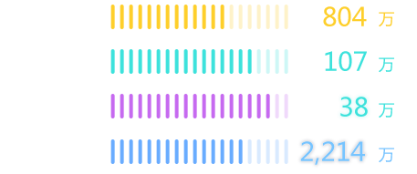
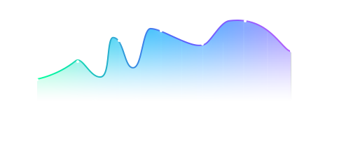
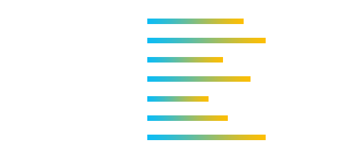

综合治理
社会维稳
反邪教
实有人口

特殊人群
单位：人

重点青少年
单位：人

综治基本数据
单位：件
清查数量
21,335
整改数量
18,382
地图
中心城区
东城区
西城区
朝阳区
海淀区
丰台区
石景山区
5
6
7
7
5
5
两新组织
42.784
万
非公有制经济组织
8.321
万
社会组织
社会治安
重点地区排查
3421
件
合格率
85.32
%
重点地区挂牌整治
142
件
合格率
79.23
%
矛盾纠纷排查调处
主要数据来源：太极整理